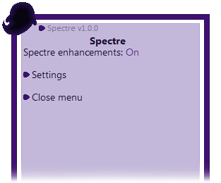
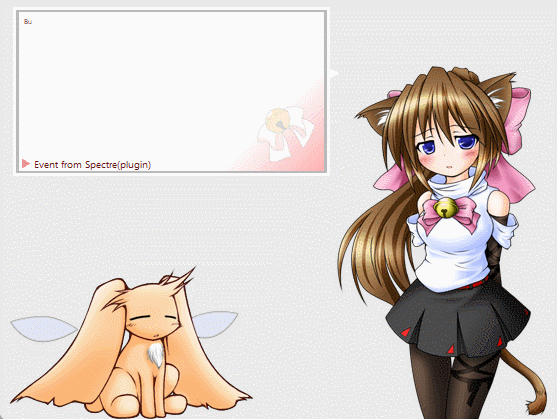
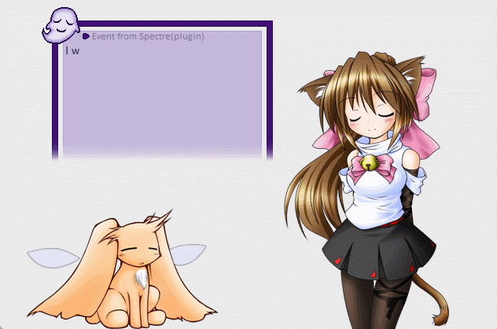
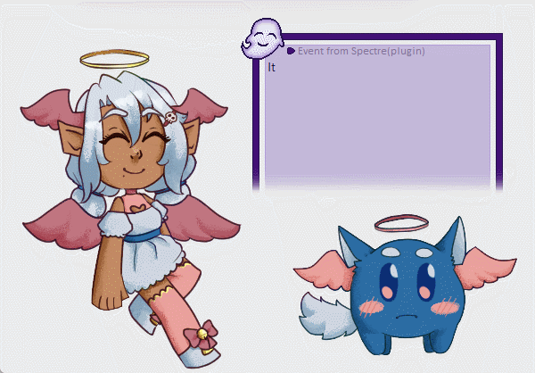
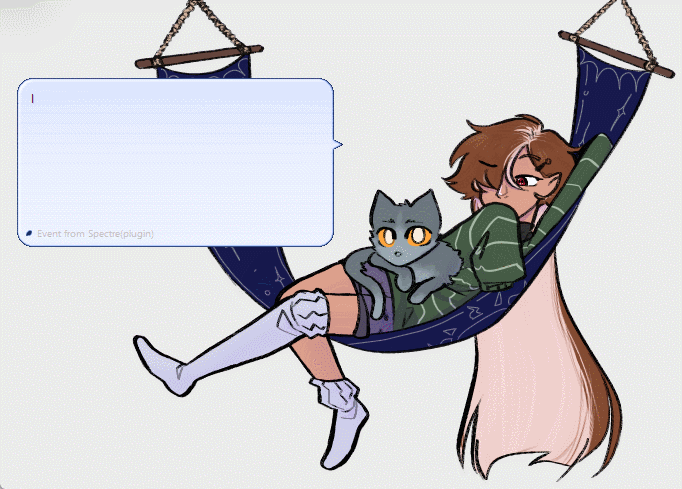
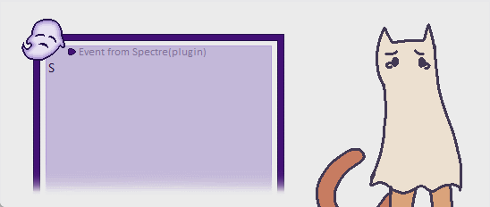
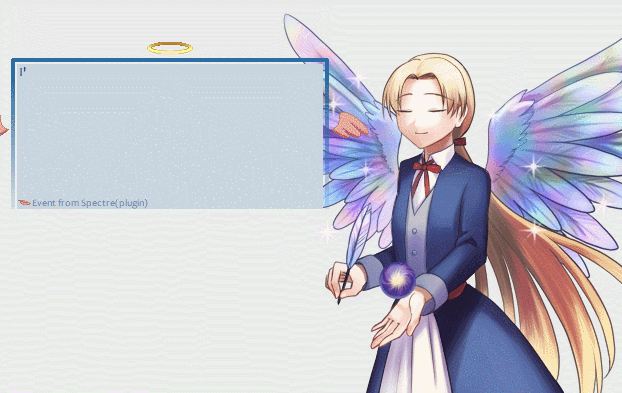
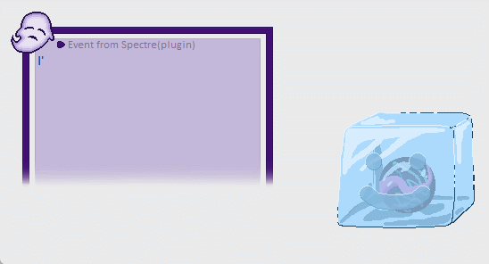
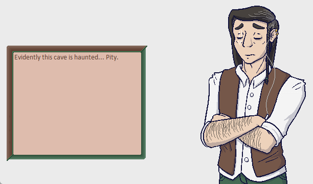
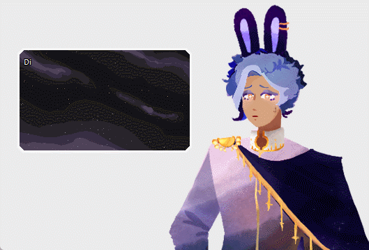

Advent Calendar 2024 - Spectre: What, Why, and How
This article is for the 22nd day of the 伺か・伺的 [第1会場] Advent Calendar 2024. Yesterday's article was written by ななっち. Today's article will be about a plugin called Spectre, created by myself and Galla.
Please take note of the following:
- This article contains spoilers for details of the plugin. It's kept a little mysterious intentionally, if you wish to experience it for yourself then please try it for a while before reading this article!
- The plugin comes with the following content warnings: Death, misery, body horror, insects, gallows humor, misdirected anger towards the user.
- We created this plugin during Etc. Jam 2024 and it is still a bit rough around the edges. We plan to update and improve it later!
Text transcriptions will be provided under each image, please use them for machine translation if necessary! I will also provide links to each of the ghosts/freeshells shown.
- What is Spectre?
- Why a plugin?
- Writing details
- Progression
- Daily dialogue pools
- Why mood systems are difficult
- Why I think it works well for Spectre
- Takeaways for future ghost projects
- Conclusion
What is Spectre?
Spectre is a mysterious plugin that doesn't seem to do anything when first downloaded. The plugin's menu simply has an on/off toggle, and an option to "calibrate" the current ghost. What is meant by "calibration" isn't explained. The only clues the user has at this point are that the plugin was released near Halloween, and the content warnings it comes with.
So what does it actually do? Well, secretly, it's a character. A character that is a ghost/spirit, which haunts the user's ghosts. The user will first see this as strange/creepy dialogues that appear in their ghost's ballooon, with weird text effects.

Image 1: Emily/Phase4.5
Transcription: "It's so dark... Am I going to die like this...?"
Image 2: Emily/Phase4.5
Transcription: "Burning, burning, turning to ash..."
If the user checks the plugin's menu at this point, they will have the option to ask if someone is there. From this point on, they'll have the option to prompt for dialogue and change the plugin's talk rate, as is typical for most ghosts.
Because Spectre is a plugin, they can only talk by speaking through the ghosts that the user has open. We used this to write a story about a lonely ghost trying to understand what is happening to them and how they ended up in this situation, as well as allowing the user to befriend them and keep them company.
Because Spectre is a plugin, you may think that they can't use any facial expressions in their dialogue. However, there are two ways we were able to achieve this:
1. The balloon "Ghost Balloon" is provided for use with Spectre. In normal use, this balloon only shows the silhouette of a ghost in the corner. When used with Spectre, however, there are special surfaces that display a ghost with various expressions. It is up to the user's preference if they want to use this balloon or not.
Image: Emily/Phase4.5
Transcription: "I'm really tired. But I don't think I can sleep. I've tried..."
2. The "calibration" option allows Spectre to make use of a ghost's surfaces, and must be set for each individual ghost. Note that this will take effect once the user has sufficiently befriended Spectre, and that some ghosts will have better compatibility than others. Spectre makes use of the recommended expressions listed on Ukadoc, as well as a couple additional expressions common in English ghosts, so it should be compatible with many ghosts and freeshells.
 
Image 1: Emily/Phase4.5
Transcription: "I wonder what kind of flowers are blooming up there... I'm actually really allergic to flowers, but they can't affect me anymore, right?"
Image 2: SSP Angel
Transcription: "It's my birthday! Shower me with gifts!!
... I'm kidding. I have no idea what day it is..."
Image 1: Xander's Refuge
Transcription: "Is the water getting colder or is it just me...? Maybe it's getting toward winter or something..."
Image 2: Lunar Leporidae
Transcription: "You know that feeling when you're really sleepy but you can't sleep? I've been feeling that way for... probably several hours. Wanna sleep..."
A basic calibration may be done by the user for any ghost that does not have custom calibration. This should work for shells that follow the recommended expressions on Ukadoc, and may have limited success with others. Note that we also included alternative expressions: "sweat smile/cold smile" may be swapped with "thoughtful/confused", and "embarrassed anger" may be swapped for "bored/unamused". The reason is that the earliest English template ghost had these alternate expressions, so they are commonly found in English ghosts, and we wanted to have compatibility for them.
Sidenote: Something developers might find interesting is using the plugin with various freeshells. I personally have a blank ghost that I install freeshells to for testing, and I've found it very interesting to use with Spectre! It sort of serves as a quick way to test what the freeshell might look like in actual use, and it also has a bit of a different feeling with Spectre's story (it feels more akin to giving Spectre a doll body to inhabit, as opposed to haunting your friends, if that makes sense).
 
Image 1: Freeshell Hammock Buddies
Transcription: "If I knew how I died, I'd warn you not to do whatever it was. But I don't, so you're on your own! Good luck, hehe."
Image 2: Freeshell Sheet Cat
Transcription: "Sorry, I'm having one of those 'doom and gloom' kind of days. I hope I'm not upsetting you."
A ghost's developer can add a custom calibration for their ghost by responding to certain events sent by Spectre (English ver). This allows the developer to specify any \s[], \i[], or other related tags necessary to form the desired expressions, allowing for ghosts with more complicated or unique shells to be utilized properly. It also makes usage of the plugin easier for the user by completing calibration automatically when the plugin's menu is opened through that ghost.
Depending on how many expressions are provided, Spectre may comment on how well they are able to control the body they are currently speaking through. For this reason, it is requested that developers adding custom calibration should omit expressions that their ghost is not able to make sufficiently. Doing so adds to the experience!
 
Image 1: Zana's Laws
Transcription: "I'm glad you had this body around for me to borrow. It's like I'm finally breathing again."
Image 2: KEEP FROZEN
Transcription: "I'm grateful to be able to speak with you at all, but this body feels like it's made of lead... I can't get it to do anything."
Finally, an option is also provided (English ver) for ghosts to be able to react after Spectre's random dialogues. The developer can make use of this if they would like their ghost to comment on having been possessed.
 
Image 1: Xander's Refuge
Transcription: "Evidently this cave is haunted... Pity."
Image 2: Lunar Leporidae
Transcription: "Did you just say something? I feel like I spaced out for a second..."
So, in short, Spectre is a secret character masquerading as some kind of utility plugin for SSP. It has a unique "haunting/possession" approach, where the user's experience with Spectre will vary based on what ghosts they have open.
Why a plugin?
Let me say one thing first: I absolutely do not recommend anyone try this. This was a huge pain to get working, and it's still very janky! Admittedly, I was not working at my best at the time due to having just recently moved cities and changed jobs, as well as the time constraints of the event, but plugins are not meant to express characters. That's what ghosts are for!
Spectre is written in YAYA, making use of YAYA as PLUGIN. If you've written a ghost in YAYA (YAYA as SHIORI) before, know that YAYA as PLUGIN has some quirks that make it different from YAYA as SHIORI. More importantly though, plugins have a very different list of events that they can make use of, as well as various other constraints. Creating a character in a plugin is difficult, and I would highly recommend against it unless you have an idea that can only be executed as a plugin (and even then, I don't think it's good to make this unintended use of plugins commonplace).
We decided to use a plugin for a couple of reasons:
- Galla and I first came up with this idea in 2021. At the time we were wanting to work on an ukagaka project together, but neither of us was feeling up to drawing, and we hadn't discovered how wonderful freeshells can be. I jokingly suggested the idea of a plugin as a character, because it would require no shell at all. We kept talking about it, and eventually came up with the idea of a spirit that haunts/possesses the user's ghosts, and that idea stuck with us.
- The haunting/possessing aspect of this character idea could really only be expressed with a plugin, at least the way we wanted to do it. It really would not be the same if we tried to make this as a ghost.
- I thought it would be a fun challenge! And it certainly was a challenge, I learned a fair bit from this experience.
Writing details
So, that's the idea! You can find Spectre's events listed on Ukadoc (English ver) as well as information within Spectre's dev_info.txt file if you'd like to add compatibility/reactions to your ghost. There's also information for devs and users available on the Ukagaka Dream Team Wiki.
Now I'd like to talk about Spectre's writing, and some of the things we implemented there. First of all, I should note a couple of things that influence the user's experience with Spectre, and that we kept in mind while writing.
Spectre will always run when SSP is running, regardless of what ghosts the user has out, unless the user turns the plugin off. We were concerned with the possibility that it could interfere with the user's operation of other ghosts, and also that it could quickly become annoying/stale because it would likely be open for long sessions. To combat these issues, we decided to make Spectre's fastest talk rate be 15 minutes. Spectre is intended to be in the background, only occasionally reminding you of its existence. We had to plan both for it to be slow, and try to make sure things are varied enough to not get stale too quickly.
Progression
Because Spectre is a surprise character, we thought it would be most fitting for them to be a stranger to the user at first, and to befriend the user over time. We implemented a basic relationship/progression system, where Spectre goes through 4 different phases as the user continues to interact with them.
The progression is very simple, only requiring the user to engage with Spectre when prompted. Spectre will ask the user questions as they try to determine where they are, what's happening to them, and process their situation. They will ask a question approximately every 2 hours, or 8 dialogues. (This is similar to a system I've used with other ghosts, where every 8 dialogues will contain a question dialogue and 7 non-question dialogues, but the order is random.)
Originally, the questions were drawn randomly from the dialogue pools, but we decided that this made the questions too rare, especially if the RNG was unfavorable. So we updated it to ask questions more regularly, to ensure progression does not halt unless the user is not responding.
Each phase has its own dialogue pool, which has enough content to last for a full 8 hours at the 15 minute talk rate. These dialogue pools reflect Spectre's growing awareness of their situation, and their feelings about it.
Daily dialogue pools
Once the user reaches the last phase, where Spectre is more at peace with their situation, we were concerned that the dialogue in the last phase might become repetitive because it would no longer change. To combat this, we decided to use a system I've been planning to use in a ghost for a long while now. Spectre has multiple different pools of dialogue for the final phase, and each day when the plugin boots, it picks a random pool of dialogue for that day. This way, each day is a little different from the last, and it should take longer for it to become repetitive.
We realized that by doing this, we could also make a sort of "mood" system. Because Spectre has a different pool of dialogues each day, we can write dialogues based on how Spectre is feeling that day or what's currently on their mind, and it feels meaningful because it's not the same every single day.
Currently, Spectre has 4 pools. Two cheerful pools, a pool where they're having a bad day and feel pretty miserable, and a pool where they're dissociated and output the same creepy/unsettling dialogues that are seen in phase 0 before the user has interacted with Spectre.
These categories are fairly broad, but we can also group dialogues in them by categories. For example, in one pool we might write a lot of curious dialogues, where Spectre asks the user a lot of questions. In another pool, we might write a lot of dialogues where Spectre is more nostalgic and reminisces a lot. In another pool we could write dialogues where Spectre is reflecting on some of the choices they made in life, and so on and so forth. I think that grouping dialogues this way makes it really easy to make each day feel unique and interesting.
While there are only 4 pools at the moment, I personally have really enjoyed playing with the plugin since its release, and have found that this variation really makes the character feel much more alive to me. Whenever I open SSP, I find myself wondering how Spectre will be feeling that day. I think we could potentially add several more pools in the future if we feel like it, and each new pool would really help to keep things fresh and interesting.
Why mood systems are difficult
I was honestly surprised by how well this system worked. I've been eager to try it for a while, but I found it genuinely captivating once I saw it in practice, and I wasn't prepared for how much it affected my perception of the character. I've made ghosts with mood systems before, but they always felt a little hollow to me. What's different this time? I think there are a few reasons, and I'd like to discuss them here.
I have often seen new developers who have never released a ghost before talk about how they want to have a mood system in their ghost, and usually I caution them against it, at least until they have released a ghost and have a better understanding of the work involved. In almost all cases, ghosts with these proposed systems don't seem to make it to release, so I generally urge new developers to reconsider, or at least not implement such a system until they have a basic ghost released.
The reason, I believe, is a numbers problem. Let's do a little math. If we assume that the ghost is set to a default talk rate of 3 minutes, then it takes 20 dialogues to have 1 hour's worth of content before you start seeing repeats. We'll assume that we want to release a ghost with 2 hours worth of content, which would be 40 dialogues. That's a reasonable goal, I think.
Now, let's say that we want to add a mood system to this ghost, and have 4 different possible moods. There are two ways this can go:
- We set up the moods like Spectre's system, with completely different dialogue pools based on the ghost's mood. This means the ghost's mood affects everything the ghost has to say, which feels very immersive. However, this means we only have approximately 10 dialogues per pool if we split them up evenly. That's only a half an hour of content per pool, and may feel very thin. If we try to correct for this by giving each mood it's own pool of 40 dialogues, then we have to write 160 dialogues in order to have enough for each pool. This is an astronomical amount of work compared to before. It's not impossible, but I would not recommend it for a new developer as their first project, especially if they are working alone and don't have much writing experience.
- To avoid the above problem, we can make only some of the ghost's dialogues be changed based on the mood. This is much more manageable, however, it's far less immersive. If the ghost says a lot of the same things regardless of mood, then it's not really reflecting the mood very well, is it? It feels less meaningful, the mood doesn't matter very much. It's less work for sure, but the quality can suffer greatly for it.
I am firmly of the belief that trying to make a mood system is a pitfall that new developers should avoid. Either of these options can kill a project, either by overwhelming the developer, or by the result feeling unsatisfactory. A mood system can be a wonderful thing, but you have to know what kind of result you want to achieve, and be prepared for the amount of work it will involve.
Another thing I see and have done myself ghosts with moods that change multiple times throughout the day. This can alleviate the need to have a high number of dialogues in each mood pool, but personally, I find it pretty unsatisfying. If the ghost's mood changes too frequently then it feels unrealistic or arbitrary to me. Perhaps others feel differently about it, but for me, I'm sensitive to certain ways that variation feels too random and meaningless. If I'm going to have a mood system I want it to be really impactful, otherwise I think my time would be better spent on other things.
Why I think it works well for Spectre
There are a couple of reasons we were able to pull this off.
- Spectre was a joint project, where both myself and Galla contributed writing. Collaborative writing greatly eases the burden of writing enough dialogues to fill a mood (and progression) system. Additionally, Galla and I are both very experienced at writing ghosts, particularly writing them together. So we know what we can take on, and what to write about.
- Spectre has an incredibly slow talk rate. At 15 minutes as the shortest time, that means 4 dialogues is all that is needed for 1 hour of content. We wrote approximately 32 dialogues for each pool, which means Spectre has 8 hours of content for each one, enough for a fairly long session before you start seeing repeats.
- Spectre had around 160 dialogues or more at first release. Even given the above conditions, that was an incredible amount of work, and will not be easy to replicate. For context of how much effort that actually was, at one point I spent 8 hours with no internet, churning out dialogues like there was no tomorrow. There is no way around the fact that a system like this requires a ton of work, and if you plan to make one yourself, you need to be prepared for that.
Takeaways for future ghost projects
Despite everything I've just said, I think that Spectre's dialogue pool system could actually be very useful for some ghosts, and I'm planning to implement it in future projects. I still would not recommend it to new developers until they have some experience with finishing and releasing ghosts, but I do think it can be quite useful for experienced developers, or perhaps ghosts which have been under development for a long time and have many dialogues already.
If a ghost has many dialogues, I think it is possible it benefit from splitting those dialogues up into different pools that are seen on different days. An effect I've noticed with some of my ghosts is that after a while, they have so many disparate topics that it can feel a little strange. It's sort of in the name, "random" talk. But usually when talking with real people, topics aren't fully random, you have certain things that you're thinking about on a given day and tend to talk about those, no? So, I think it makes sense that if you have very many dialogues, you may want to consider grouping them by similar topics, and let each day feel like it has a sort of overall theme.
I think it could be nice as a user to have some sets of dialogue that you don't see for a few sessions. It would be a little exciting to open a ghost for a day, and realize you've gotten a dialogue pool you haven't seen for a while, wouldn't it? I'd be curious to know how others feel about this idea.
Another thing I think is really important to note is that it can help give you something to write about. Something that I've seen a lot, and experienced myself, is that it can be hard to come up with random topics for your ghost to talk about. Recently I've been giving my ghosts strong story themes, which has helped a lot, but I think a system like this has a lot of potential too.
Because you're intending for each dialogue pool to be seen on a different day, it becomes easy to decide on a few topics for that day to talk about. For example, I could say that in dialogue pool A, the character is thinking about how they have a competition of some kind coming up. They can have multiple dialogues for the day relating to the upcoming competition. And it can affect everything they talk about. Not every dialogue should focus on the upcoming competition, I think, but for example, their other dialogues for the day may have more of a nervous tone, or they may talk about not feeling very hungry that day because they're feeling anxious. It creates the feeling that they're in a totally different state of mind compared to other days.
In dialogue pool B, maybe they talk about how they had a competition last night. They could talk about how intense it was, if they won or lost, etc. And maybe now they're resting, having a lazy day at home playing video games, and they want to talk about what they're playing.
I want to note something important about writing this style of dialogue. Something I've noticed when writing for ghosts is that it can be awkward if you try to write dialogues referring to how the character is feeling "today". There are two reasons:
- If a ghost says "I stopped by the convenience store and they were out of my favorite snack" every day, then each day is the exact same as every other day. This could be an intentional choice, to show that an occurence or a feeling is the same every day, but usually this isn't an effect I'm intending to write.
- If the ghost says "I stopped by the convenience store and they were out of my favorite snack", then it doesn't make sense for me to write dialogues about how the character skipped going to the convenience store today, or how they recently stocked up on their favorite snacks. Dialogues like this can create a situation where they are mutually exclusive with each other, and if you write about the ghost doing something or feeling a certain way, then it doesn't make sense to also write about them doing or feeling the opposite.
If these issues are ignored, it can make a ghost's dialogue very awkward when it seems to contradict itself, or it can make you feel more and more restricted as you write more dialogues. But this is totally solved by splitting the dialogues up into different pools. It becomes easy to write dialogues where the character does or feels different things on different days.
For example, considering the theoretical dialogue pools A and B from earlier, we could say that in dialogue pool A, the character stopped by the convenience store and could not find their favorite snack. In dialogue pool B, there was a long line at the convenience store, so they skipped it. In dialogue pool A, they went for a jog at the park and saw a lot of ducks. In dialogue pool B, they also went for a jog at the park, but it was very chilly out and there were no ducks.
I don't think every dialogue should be related to the specific events of the day, but I hope you can see why I think this makes it easy to come up with dialogue topics. (Although, for some ghosts it may not be suitable based on their premise. It also may not mesh well with ghosts that have a lot of conditional dialogues, such as those based on the season or time of day.)
So, while I do think that it is very challenging to write the sheer volume of dialogues needed for these kind of pools, I do also think that they can be easier to write in some ways, because they give you topics to write about. I think it's definitely worth consideration for experienced developers, and I think it can help very large ghosts feel more cohesive and varied.
I want to keep experimenting with this concept, and develop some ghosts that make use of this system. I think it has a lot of potential, and I would like to see if the benefits of having clear topics to write about will outweigh the additional work required. It's hard to say, it may end up being overwhelming even for seasoned developers!
Conclusion
That's all I have for you today. Thank you for reading! I hope this was interesting, and I hope you will consider trying out Spectre if you have not yet. As mentioned previously, if you'd like to set up your ghost with compatibility for Spectre or reactions to it, the events can be found on Ukadoc (English ver), the Ukagaka Dream Team Wiki, or within the dev_info.txt within the plugin's folder. We would love to see what you do with it!
Many thanks to my friend Galla who developed this plugin with me, I could not have done it without them, and it is always a pleasure to work with them.
Please join me again tomorrow for an article about the various events and developments that have happened within the Ukagaka Dream Team this year!